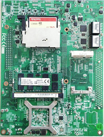
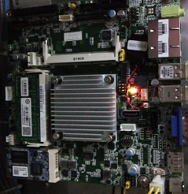

工控机升级原因：
SS-X8084SSF-S和SS-X8084SSF-M2配备的工控机品号为34063061（规格PCM-9562（研华））已停产，若客户现场旧版工控机损坏，则使用新版AIMB-215嵌入式主板替代，品号仍为34063061，规格及物料版本更新如下图：
旧版工控机 新版工控机
针对机型：
SS-X8084SSF-S和SS-X8084SSF-M2
配件准备：
1、SS-X8084SSF-S机型：34063061（工控机-研华AIMB-215嵌入式主板）、53013522（工控机安装架）
2、SS-X8084SSF-M2机型：34063061（工控机-研华AIMB-215嵌入式主板）、53011411（工控机安装架）
由于新工控机安装孔位有变动，故相应工控机支架需要同时更换。
上位机软件程序准备及更换：
1、SS-X8084SSF-S机型：上位机程序为SS-X8084SSF-S-IPC-V1.05.zip;
将该压缩包解压缩后，把8084SSF-S文件夹拷贝到C盘根目录下;
将FoodDector.exe拷贝到“开始”~“所有程序”~“启动”文件夹中
2、SS-X8084SSF-M2机型：上位机程序为SS-X8084SSF-M-XS-SCDZ-V1.03.zip;
将该压缩包解压缩后，把MyParams文件夹拷贝到C盘根目录下;
将FoodDector.exe拷贝到“开始”~“所有程序”~“启动”文件夹中
串口号修改：
1、SS-X8084SSF-S机型：上位机程序默认外围控制板使用RS422串口4，系统底板使用RS422串口5，但新工控机只有
串口3（自带）和串口5（转换）是RS422，因此需要在“我的电脑"上手动修改串口号。
步骤如下：
将原串口5（接外围控制板）串口号改为4，原串口号3(接系统底板）串口号为5。
步骤一：右击“我的电脑”~“管理”~“设备管理器”~右侧的“端口（com和LPT）"；
步骤二：将串口4的端口号由4改为14，让出串口号。右击“通信端口(COM4)"~"属性（R）“~”端口设置“~”高级“~在下拉框
“COM端口号”中选“COM4”，确定即可；
步骤三：参照步骤二，将串口5的串口号改为4；
步骤四：参考步骤二，将串口3的串口号改为5.
工控机修改本地IP地址，将连接到系统底板的网口地址修改为192.168.131.136.
2、SS-X8084SSF-M2机型：上位机程序默认外围控制板使用RS422串口4，系统底板使用RS422串口5，但新工
控机只有串口3和串口5是RS422，因此需要在电脑上手动修改串口号，步骤请参考SS-X8084SSF-S机型的步骤。
安装libUSB驱动：
SS-X8084SSF-M2系统底板通过USB连接工控机，在通电状态下，安装libUSB驱动，并选择设备SS-X-7044F；
安装成功后软件即可获取波形数据。
现场安装与外围控制板通讯线的通讯线改制：
更换工控机安装支架及工控机，安装方式不变，新工控机自带一根串口转接线，将该串口线一端接入工控机主板，
然后将另一端COM3，COM4，COM5，COM6分别固定在工控机安装支架的孔槽内。（注意：新工控机只有COM3
是RS422通讯口，其余为RS232通讯口。）
将系统底板通讯线接至新工控机自带RS422通讯口（COM3）。
工控机与外围控制板通信还需要一个RS422通讯口，只能使用无源转换器（品号：34063202）将其中一个RS232转换为
RS422，将无源转换器输入端插入工控机串口COM5上，然后将外围控制板通讯线插在无源转换器输出端。（注意：
使用新的外围控制板通讯线，不同机型使用的线束不同：
（1）SS-X8084SSF-S机型增补线束品号为55800034，因S机型不同版本使用的外围控制板不同，电路板上的通讯接口不同，共有两种规格，配有两根线，其中1号线为排线，对应接口为IDC10的外围控制板，2号线为网线，对应网口接头的外围控制板，改制时根据外围控制板上的接口类型对应选择即可；
（2）SS-X8084SSF-M2机型增补线束品号为55800035，直接插入原电路板通讯接口即可；
M系列机型更换经验分享：
第一步：拆下老的研华工控机和工控机机架。
第二步：安装固定新的工控机和工控机架。
新的工控机涉及线束:需要一个电源线（使用原先设备上自带的就行），一个VGA线（一端插新的工控机，一端插在显示屏），一个一拖4的40芯排线（一端是排线头，另外一端是4个DB接头），排线头插在工控机板上的com3、4、5、6端口，另外一端4个DB接头，分别对应com3系统底板，com4射源控制盒，com5需要通过插一个无源转换器，对应外围控制板。新的工控机4个USB端口，分别插上原来老的工控机的4个USB插头不分顺序。这一步完成后，新旧工控机安装替换已完成！下面就准备安装上位机程序，liuusb驱动和触摸屏elo驱动
（备注：M机型的外围控制板通讯线，需要改下线建议将一侧白色头子插针挑出来，重新安装按照上面图纸外围控制板与工控机通讯线顺序接插）
第三步：安装上位机程序（参考前文上位机软件程序准备及更换，），和修改端口号（参考前文串口号修改）。
上位机程序哪里下载？（https://meyerxray.github.io/）请进入X光产品线技术支持网站“上位机软件”“M系列机型”“M2”可以直接下载。
（备注：需要键盘和鼠标进行操作。）
第四步：安装libusb，在哪里下载？（https://meyerxray.github.io/）请进入X光产品线技术支持网站软件驱动中可以直接下载。
下载好安装包，解压后。M和M2机型，系统底板usb插头要连接到工控机（之前安装新的工控机这步已经做到位了），根据提示进行安装
第五步：打开上位机软件
点击xrayforfood，就会进入x光各个端口检测界面，看是否都能通信上。
第六步：安装触摸屏elo驱动
触摸屏elo驱动在哪里下载？（https://meyerxray.github.io/）请进入X光产品线技术支持网站软件驱动中可以直接下载。不安装这个驱动只能用鼠标操作显示界面，安装这个驱动根据提示选择“usb触摸驱动程序”，校正触摸屏后可以正常调试参数了。